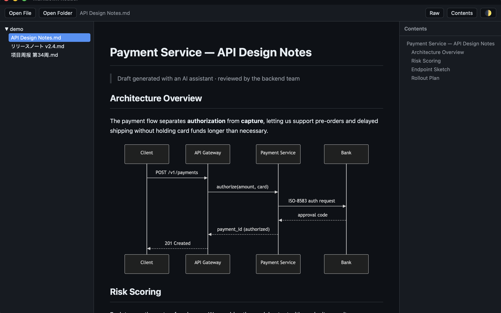
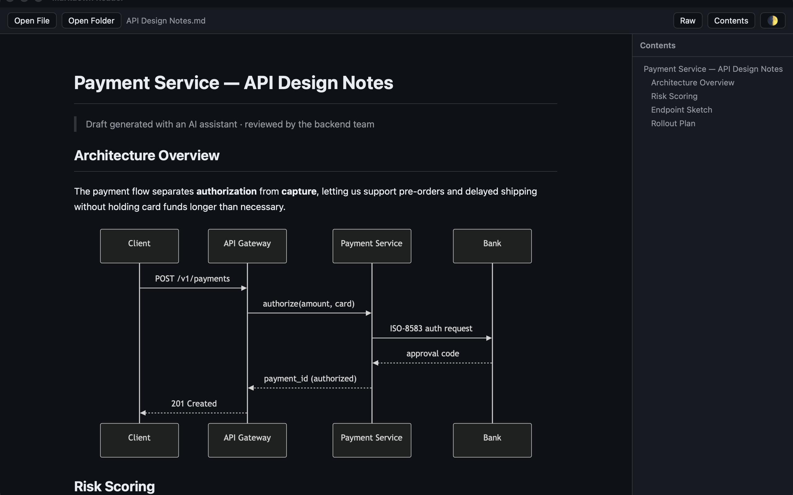
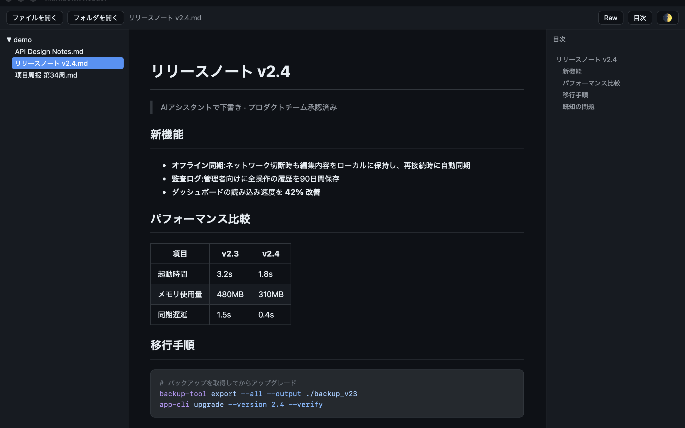
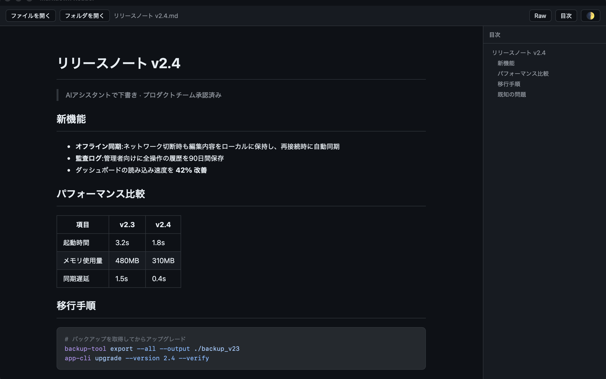
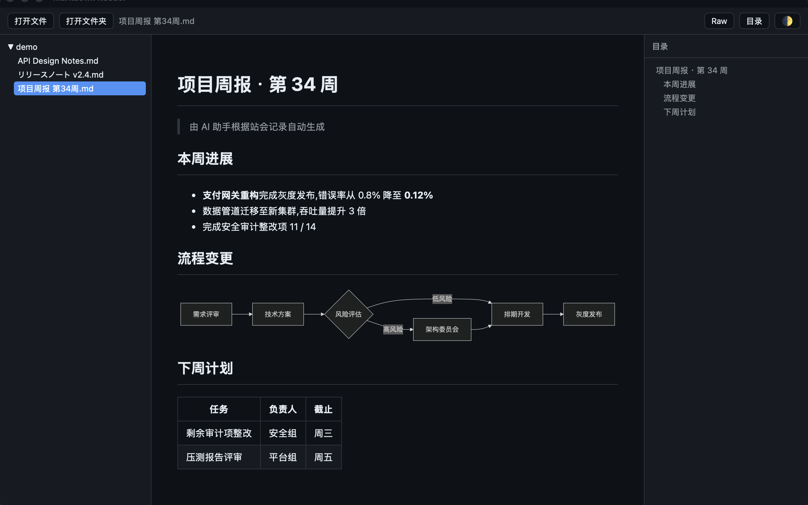
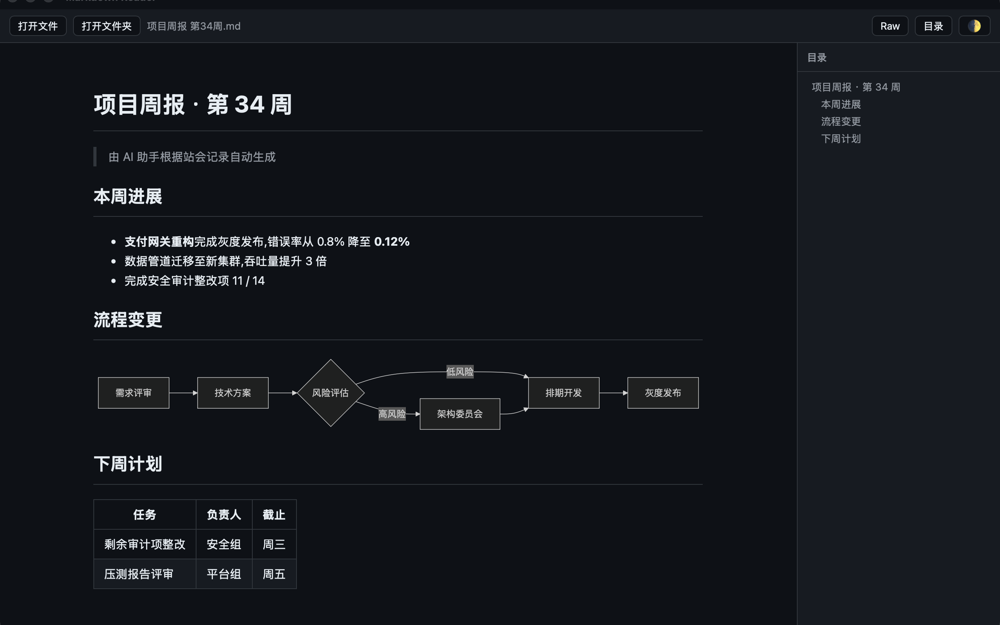

AI Doc Reader
Markdown View
The Missing Reader for AI-Generated Documents
Today's AI tools write in Markdown. AI Doc Reader turns raw .md output into a clean, beautiful document — diagrams, math, code and all.
Mermaid diagrams, KaTeX math formulas, syntax-highlighted code blocks, tables and task lists — all displayed properly, automatically.
Open a folder and browse every Markdown file in a tree sidebar, with an auto-generated table of contents for each document.
See every revision of a document and compare any two versions side by side — unique among Markdown readers.
A lightweight native app, not a browser wrapper. Instant launch, low memory, live reload when files change on disk.
English, Japanese and Simplified Chinese interface, with light and dark themes.
Everything renders locally under macOS App Sandbox. No account, no tracking — your documents never leave your Mac.


AIが生成した文書のためのリーダー
AIツールの出力はMarkdownがほとんど。AI Doc Readerは.mdファイルを図・数式・コードまで美しく表示します。
Mermaid図、KaTeX数式、シンタックスハイライト付きコード、表、タスクリストを自動で正しくレンダリング。
フォルダを開けばMarkdownファイルをツリー表示。各文書の目次も自動生成されます。
文書の変更履歴を表示し、任意の2バージョンを並べて比較。Markdownリーダーでは他にない機能です。
ブラウザのラッパーではない軽量ネイティブアプリ。瞬時に起動し、ファイル変更も自動反映。
日本語・英語・簡体字中国語のインターフェース。ライト/ダークテーマ対応。
すべての処理はMac内で完結。アカウント不要、トラッキングなし。文書が外部に送信されることはありません。


为 AI 生成的文档而生的阅读器
如今 AI 工具的输出几乎都是 Markdown。AI Doc Reader 把原始 .md 文件渲染成排版精美的文档——图表、公式、代码一个不落。
Mermaid 图表、KaTeX 数学公式、语法高亮代码块、表格、任务清单,全部自动正确显示。
打开文件夹即可树状浏览全部 Markdown 文件,每篇文档自动生成目录。
查看文档每一次修改,任选两个版本并排对比——Markdown 阅读器中独此一家。
原生应用而非浏览器套壳,秒开、省内存,文件变动自动刷新。
中文、日语、英语界面,支持浅色/深色主题。
所有渲染在本地完成,受 macOS 沙盒保护。无账号、无跟踪,文档永不离开你的 Mac。

